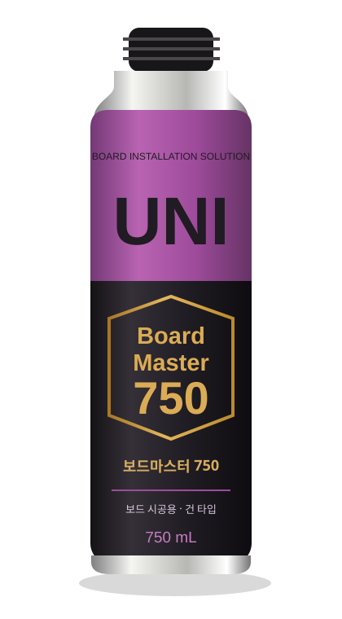

JOINT FILLING
01
이음부·틈새 충진
보드와 보드 사이에 남는 틈새를 채우는 작업에 사용합니다.
BOARD INSTALLATION SOLUTION
보드 시공용 건 타입 우레탄폼
보드 사이 틈새부터 접착 보강까지.
현장의 다음 공정을 위한 선택, 보드마스터 750.

01 / APPLICATION
단열보드의 이음부와 틈새를 채우고,
보드 시공에 필요한 접착을 보강합니다.
보드와 보드 사이에 남는 틈새를 채우는 작업에 사용합니다.
현장 시방에 따라 단열보드 시공 시 접착 보강에 사용합니다.
※ 적용 부위를 설명하는 개념 도식입니다. 표면재·바탕면의 적합성을 사전에 확인하고 현장 시방에 따른 고정 방법을 준수하세요.
02 / PRODUCT DETAILS
단열보드의 이음부와 틈새 등
충진이 필요한 부위에 적용합니다.
PUR·PIR, EPS, XPS 등
보드 시공의 접착 보강을 돕습니다.
전용 폼건을 결합하여 사용하는
일액형 PU 폼입니다.
현장에 필요한 제품 정보를 확인하세요.
03 / HOW TO USE
작업 전 제품 표시사항과 최신 시방서를 확인하세요.
현장 조건에 따라 작업 방법이 달라질 수 있습니다.
먼지·이물질·유분을 제거하고 바탕면 적합성을 확인합니다.
제품 사용법에 따라 충분히 흔들고 전용 건을 결합합니다.
용도와 현장 시방에 맞춰 분사 위치와 양을 조절합니다.
승인된 시방에 따라 보드를 부착하고 필요한 고정을 진행합니다.
제품 안내에 따라 폼건을 세척하고 용기를 안전하게 보관합니다.
충분한 환기와 적절한 보호구가 필요합니다. 화기·직사광선을 피하고, 작업 온도·용기 온도·피착면 온도와 경화시간은 각각 구분하여 확인하세요.
사용할 보드와 현장 조건을 알려주시면 관련 자료를 상담하실 수 있습니다.
자료상 적용 대상은 PUR·PIR, EPS, XPS 단열보드입니다. 보드 표면재와 바탕면, 현장 조건에 따라 적합성이 달라질 수 있으므로 사용 전 확인해 주세요.
전용 폼건을 결합하는 건 타입 제품입니다. 폼건 포함 여부와 구매 조건은 상담 시 확인해 주세요.
현장 시방과 설계에 따른 고정 방법을 확인해야 합니다. 제품의 접착 보강 기능을 구조 고정의 대체로 해석하지 마세요.
사계절용으로 안내되는 제품이지만 작업 환경·용기·피착면 온도 조건을 각각 확인해야 합니다. 작업할 현장의 온도와 바탕면 정보를 알려주시면 사용 조건을 상담하실 수 있습니다.
표면 경화, 절단 가능, 완전 경화, 부착 및 고정시간은 서로 다릅니다. 작업 온도와 습도에 따라서도 차이가 있으므로 최종 제품 사용법과 현장 시방을 확인하세요.
제품 용도, 예상 수량, 납품 지역, 희망 일정을 정리해 상담해 주세요. 가격과 최소 주문수량, 공급 일정은 담당자 확인 후 안내됩니다.
05 / CONTACT
제품 선택부터 시공 조건, 대량 납품까지.
현장에 필요한 내용을 남겨주세요.